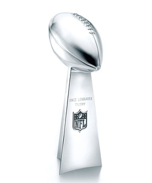

Football is one of the most popular sports that is played today. There are millions of people that watch almost every game of the season. The season wraps up with a championship game called the Super Bowl which is one of the top 10 most watched sports events of the year. Football is one of my favorite sports to watch and play.
| Last 5 Super Bowl Winners | Year They Won |
|---|---|
| Kansas City Chiefs | 2023 |
| Los Angeles Rams | 2022 |
| Tampa Bay Buccaneers | 2021 |
| Kansas City Chiefs | 2020 |
| Philadelphia Eachles | 2019 |
The Super Bowl grosses over 14 billion dollars annually. The way that the teams that play in the Super Bowl are selected is pretty similar to a regular tournament style. There are 2 confrences in the NFL; the AFC and the NFC. Throughout the season based on each team's win-loss record they are given a seed in the playoffs. After the playoffs the two remaning teams (one from each confrence) are the teams that play in the Super Bowl. For a list of all of the previous Super Bowl winners and more information about it click the image below. 